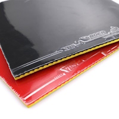
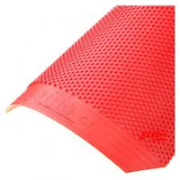
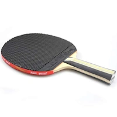
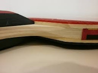
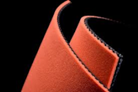

Загальна інформація
Накладка для тенісної ракетки – шар, що покриває ігрову поверхню ракетки для настільного тенісу. Зазвичай накладка складається з гуми (зовнішній шар) і губки (внутрішній шар). Вона забезпечує контроль подачі та прийому м'яча, керування обертанням, а також дозволяє демонструвати техніку гри.
Гладкі накладки
Звичайні накладки
Звичайні накладки – це найбільш розповсюджений тип накладок для настільного тенісу. Вони забезпечують хорошу швидкість і обертання м'яча, а також дозволяють гравцю контролювати його рух.
Накладки антиспін
«Антиспін» – це накладка, яка не створює обертання і забезпечує відмінний контроль над м'ячем. Це дозволяє гравцю гасити обертання м'яча або повертати його супернику. Накладка «антиспін» зазвичай наклеюється з одного боку.
Важливо
Для нападу використовуються короткі шипи та гладкі накладки, для «зриву» гри
супротивника
– довгі
шипи та «антиспін».
Гібридні накладки
Гібридні накладки – це суміш гладкої та шипованої накладок. Такі накладки дозволяють гравцю комбінувати різні удари та обертання, що робить його гру більш непередбачуваною та ефективною.
Липкі накладки
Липка накладка – має високе зчеплення з м'ячем, відрізняється невисокою вартістю та здатністю створювати дуже сильне і часто непередбачуване обертання м'яча. Однак така накладка надає невелику швидкість і є досить жорсткою.
«Липкі» накладки стануть оптимальним вибором для гри біля столу (при плоских ударах, на підставці або блоці). Часто «липучкою» користуються захисники в комбінації з шипованою накладкою.
Важливо
Щоб відрізнити «липучки» від інших накладок, досить зверху притиснути м'яч
накладкою і
підняти
ракетку: у цьому випадку м'яч «прилипне» до накладки або, принаймні, підскочить.
Шиповані накладки
Короткі шипи
Короткі шипи – це накладки з короткими шипами, які забезпечують хороший контроль над м'ячем і дозволяють гравцю легко керувати його рухом.
Середні шипи
Середні шипи (medium pips) у настільному тенісі — це тип накладок для ракетки, які мають шипи середньої довжини на поверхні. Вони зазвичай використовуються гравцями, які прагнуть поєднати переваги коротких і довгих шипів.
Середні шипи можуть підійти як для оборонців, так і для атакувальних гравців, які використовують різні тактики в залежності від ситуації на столі. Вони добре підходять для гравців, які люблять варіювати темп гри.
Довгі шипи
Довгі шипи – використовуються для повернення обертання суперника, при цьому м'яч у польоті вібрує і рухається по непередбачуваній траєкторії. Довгі шипи надають хороший контроль над м'ячем. Такими накладками складно грати в нападі, тому їх зазвичай встановлюють тільки з одного боку ракетки для захисту.
ОХ шипи
Шипи без губки (OX) – мають невелику швидкість і дуже високий контроль над м'ячем. Шипи без губки не дозволяють створити серйозне обертання. Такі накладки використовують гравці, які володіють класичним захисним стилем або новачки.
Різновиди губки
Товщина губки
 Губка знаходиться між основою ракетки та гумовою накладкою, забезпечуючи м'ячу обертання при ударі. Від її товщини залежить швидкість накладки і контроль. Товстіші губки мають кращу швидкість і обертання, але надають менше контролю над м'ячем.
Існують губки з такою товщиною:
- Тонка губка (до 1.3 мм): забезпечує високий контроль, але низьку швидкість;
- Середня губка (1.4-1.7 мм): компроміс між контролем і швидкістю;
- Товста губка (1.8-2.1 мм): хороша швидкість і обертання;
- Екстра товста губка (2.2 мм): максимальна швидкість і обертання.
Жорсткість губки
Жорсткість губки накладки також впливає на характеристики ракетки. М'які губки забезпечують кращий контроль і відчуття м'яча, але меншу швидкість. Жорсткі губки додають швидкості та потужності удару, але можуть знижувати контроль над м'ячем.